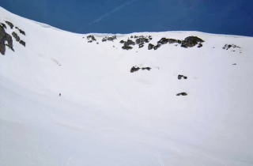

|
|||||||||||||||||||||||||||
|
|||||||||||||||||||||||||||
|
日本のオートルートを滑る |
| 実 施 日 | ２００９年４月２９日〜５月４日 | |||
| リーダー | 平野 裕也 | |||
| 報 告 者 | 平野 裕也 | |||
| HP製作者 | 徳永 泰朗 | |||
| 参加者数 | ２名 （会員1名、非会員1名） | |||
| ここ数年、宿題になっていた日本のオートルート。立山から槍ヶ岳まで、途中薬師岳、黒部五郎岳、三俣蓮華岳など3000m級の北アルプス稜線５７．４ｋｍをスキーで縦走するこのルートは、山スキーのさまざまな技術や経験が試される難コース。幸い1週間におよぶ快晴に恵まれ、初回のトライで成功することができました。 |
| ４月２９日 （水） |
|
8：30 扇沢 9：50/10：15 室堂 11：20/30 一の越 12：30 龍王岳・鬼岳鞍部 14：55 ザラ峠 16：20 五色が原山荘 |
| A | ||
| スタート 室堂から一の越へ | 一の越から竜王岳の裾をトラバース |
 |
| ようやく五色が原山荘が見えた。はるか遠くに薬師岳が立ちはだかる |
| ４月３０日 （木） |
|
6：52五色が原山荘発 7：55鳶山 9：42/10：07 越中沢岳 12:43/55 スゴ乗越 14：10スゴ乗越小屋 |
| A | ||
| 五色が原山荘を出発 | 越中沢岳の下りはアイゼンで歩きました |
|
スゴ乗越小屋のテント。広瀬さん持参の |
| ５月１日 （金） |
|
7：00出発 8：35間山 11：02/15 北薬師岳 11：28/40 12：28/40 薬師岳 |
| A | ||
|
北薬師岳の北西斜面 |
遂に薬師岳の頂上を踏む |
| 太郎小屋で待望のビール しかし日焼けは火ぶくれに |
| ５月２日 （土） |
|
6：30太郎小屋発 8：03/ 18北の俣岳 9：40/50 10：39/56黒部五郎岳肩 11：25/45 三俣蓮華岳 15：23双六小屋 |
| A | ||
| 水俣乗越に向けて大トラバース | 黒部五郎のカールを覗く あの雪庇の横からトレースが落ちている！ |
|  | A | |
|
黒部五郎のカールを滑る |
三俣蓮華岳頂上より槍ヶ岳を望む あそこが終着駅だ |
| ５月３日 （日） |
| 5：45双六小屋発 6：36樅沢岳 10：05千丈乗越 11：45/12：05槍ヶ岳 12：56/13：15槍沢ロッジ 14：50/15：00横尾 16：00徳沢園 |
| 早暁、槍を目指して出発 |
|
西鎌尾根から槍に続く稜線 |
| A |  |
|
|
樅沢岳のナイフリッジを下る |
まだ羽は冬色だ |
|
槍ヶ岳に到着。鯉幟が迎えてくれる |